Desafio
A plataforma apresentava limitações de escalabilidade, baixa adesão no processo de cadastro e uma experiência fragmentada entre moradores, parceiros e operação.
Ecossistema digital para condomínios
Evolução de um ecossistema digital para condomínios, conectando moradores, parceiros e operação por meio de produtos mais simples, escaláveis e orientados às necessidades dos usuários.
Resumo executivo
O Apepê precisava evoluir de uma solução pontual para uma plataforma digital capaz de atender moradores, parceiros e equipes operacionais de forma integrada. O trabalho envolveu Product Discovery, pesquisa com usuários, definição de roadmap, evolução do modelo de negócio, criação de novos produtos e estruturação de um Design System corporativo. Como resultado, o ecossistema foi ampliado para quatro aplicações digitais e a base de usuários cresceu de aproximadamente 1.500 para mais de 9.000 usuários.
A plataforma apresentava limitações de escalabilidade, baixa adesão no processo de cadastro e uma experiência fragmentada entre moradores, parceiros e operação.
Redesenho da experiência, revisão do modelo de negócio e estruturação de um ecossistema com quatro produtos digitais integrados (Apepê, Desk, Manager e Partner).
Aumento da base de usuários, expansão da rede de parceiros, maior eficiência operacional e evolução contínua da experiência digital.
Product Discovery, pesquisa com usuários, testes de usabilidade, priorização de oportunidades, roadmap, prototipação e criação de Design System.
Resumo da solução
A solução foi estruturada para atender diferentes públicos e necessidades do ambiente condominial.
Aplicativo voltado aos moradores, centralizando serviços, comunicação, reservas e acesso às facilidades do condomínio.
Solução de apoio à operação e ao atendimento, permitindo acompanhar solicitações, acessos e serviços.
Plataforma para gestão de informações, usuários, parceiros, serviços e indicadores operacionais.
Ambiente voltado aos parceiros comerciais, permitindo ampliar a oferta de serviços e fortalecer o ecossistema de benefícios.
Metodologia
Mapeamento de problemas, necessidades dos usuários e oportunidades de evolução do ecossistema.
Entrevistas, testes exploratórios e análise de comportamentos para compreender dificuldades de cadastro, uso e navegação.
Avaliação de produtos e soluções do mercado para identificar padrões, oportunidades e diferenciais.
Organização das oportunidades com base em impacto para o usuário, valor para o negócio e viabilidade técnica.
Criação de fluxos, wireframes e protótipos para testar soluções antes da implementação.
Estruturação de componentes, padrões e diretrizes para garantir consistência, velocidade e escalabilidade.
Big numbers
Apepê, Desk, Manager e Partner
Biblioteca centralizada dos componentes, padrões e tom de voz.
Crescimento após a evolução do cadastro e do modelo de negócios.
Crescimento da rede de parceiros.
As pesquisas mostraram que o modelo inicial de cadastro criava barreiras para a entrada de novos usuários. A partir desse diagnóstico, o processo foi redesenhado e o posicionamento do produto evoluiu de uma solução restrita para uma plataforma digital mais aberta e escalável.
Essa mudança contribuiu diretamente para:
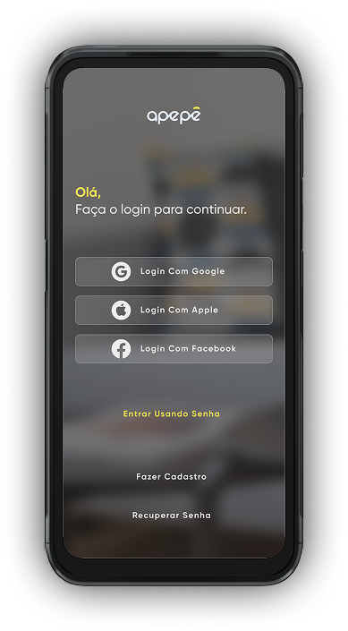
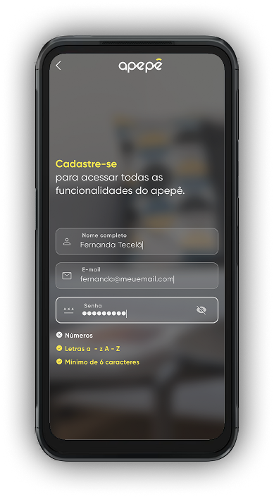
O crescimento do Apepê não foi resultado apenas de aquisição de usuários, mas da redução de fricções e da evolução do modelo de negócio.
As principais alavancas foram:
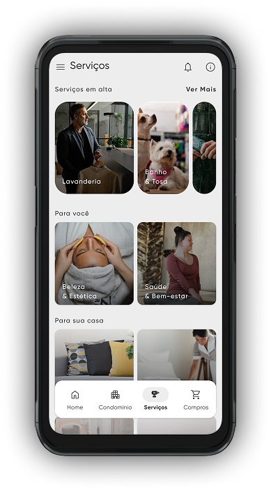
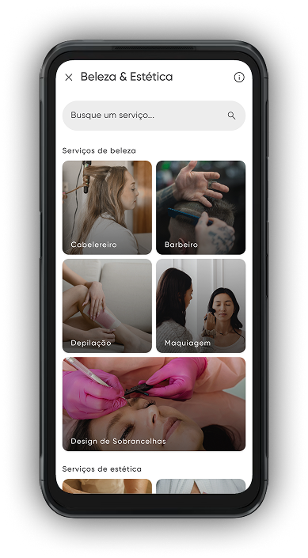
A evolução do Apepê resultou em um ecossistema digital capaz de atender diferentes públicos, ampliar a adoção e sustentar novas oportunidades de negócio.
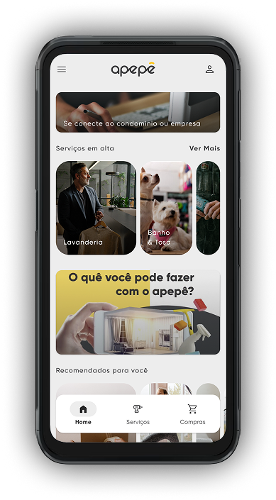
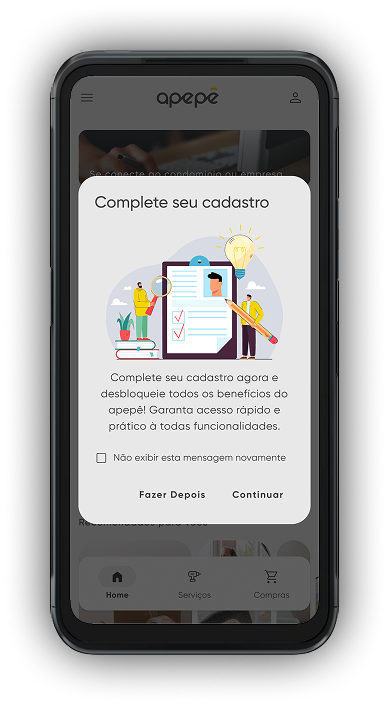
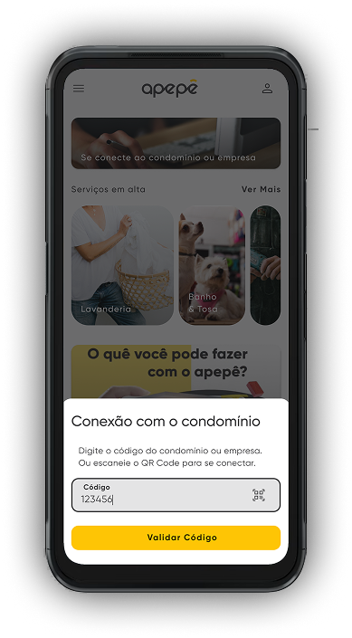
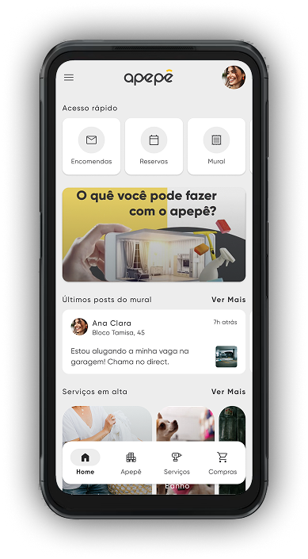
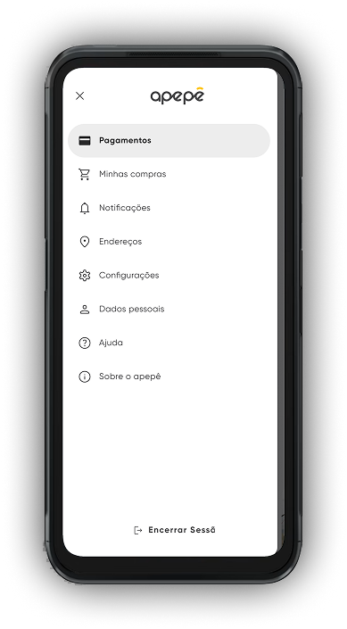
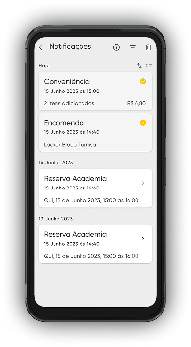
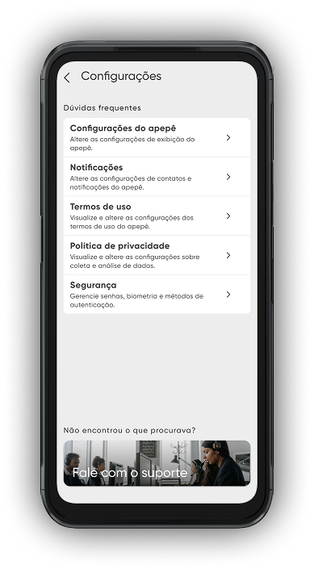
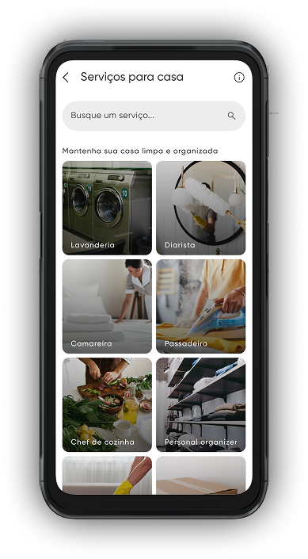
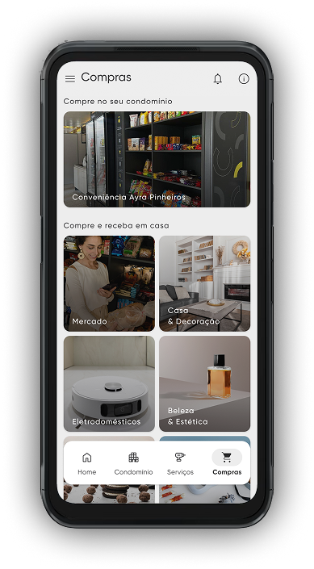
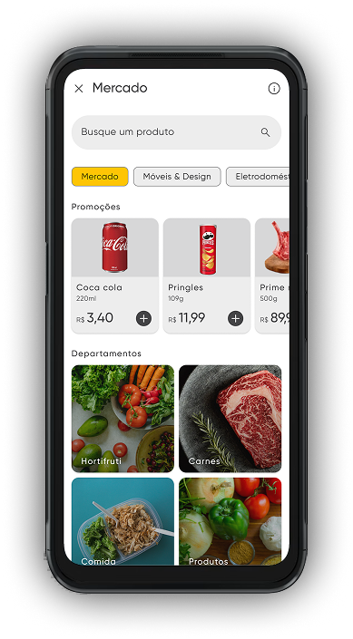